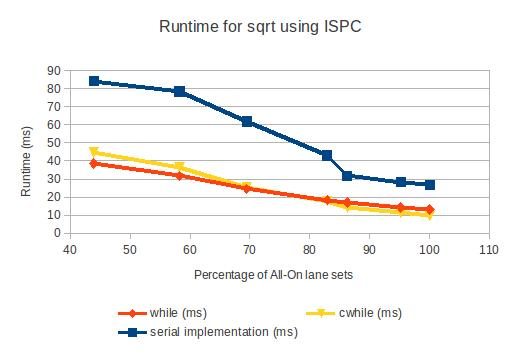

CMU 15-418 (Spring 2012) Final Project Report
Improving ISPC compilation using profiling output
Summary
I modified the ISPC compiler to use profiler output as a compilation hint.
Specifically, I profiled to test for coherency at runtime at conditionals.
I used the lane fill percentage to assist the compiler in deciding whether
or not to emit specialized code paths for coherent execution.
Background
ISPC is a compiler from a C-like language to SIMD vector instructions in x86.
ISPC splits data into chunks of the SIMD width of the processor and executes
them together using vector instructions. Upon conditional statements, the
compiler emits code which masks the lanes appropriately in different
sections of the conditional.
ISPC has special "coherent" conditionals (cif, cwhile, cdo, cfor), which
emit instructions to test for the all-on lane condition and emit specialized
mask-less code. There is a tradeoff between cif and if. In the case of
coherent input, the cif emits faster code with less instructions. However,
in the case of divergent input, cif emits code with extra checks and huge
code bloat (multiple specialized code paths).
There is no way at compile to know how coherent the workload will be.
This is why ISPC does not attempt to pick intelligently. It instead gives
the programmer the option of using a different token to indicate
coherency.
Approach
My plan was to give the compiler the ability to pick intelligently.
Since at compile time, enough information does not even exist, I
took statistics from runtime and looped them back into the compile phase.
I wrote a profiling function. When compiled with instrumentation on,
the program will output data about lane fill percentages to a file.
ISPC emits function calls to the profiling function at various
"interesting" points in the code, namely conditionals.
Finally, I added a command line option to ispc to take in one of these
profile output files. Then, at the point where the conditional
is evaluated and code is generated, I checked the profiling
data. If the profile data indicates coherency, then I had
ispc emit a coherent execution path.
Use case:
ispc mycode.ispc --instrumented -o myprog
./myprog small.inp \> ispcprof.out
ispc mycode.ispc --profile-hint=ispcprof.out -o myprog
./myprog huge.inp (now runs slightly better!)
I tested using a sqrt program given
here. I ran different versions of the
sqrt function using while and cwhile for the inner loop
of Newton's method.
Results
Here are examples of lane sets from the randomized input and the
coherent inputs which I used to the sqrt function. As you can see,
the randomized input diverges heavily in the number of while loop
iterations while the coherent input converges quickly.
My hypothesis is that while() will perform better on the divergent
case and that cwhile() will perform better on the coherent case.
I took some data to test this hypothesis, tested on both SSE3 and
AVX instructions.

You can check out the actual numbers
here.
The data backs up my hypothesis, but only just barely. Espcially, on
AVX, the difference between cwhile() and while() is very small.
This makes sense, since the overhead of mask instructions is quite
low on AVX. On SSE3, the difference is more noticeable. Either way,
the optimization is there, even if the speedup is small
I measured the percentage of lane-sets in which the mask was all-on.
This directly correlates to the percentage of x86 loop iterations
in which the optimized code path is taken. When this percentage
is sufficiently high (I used 95%), then it is worth emitting
an optimized-for-all-on code path like cwhile() does. Otherwise,
it's better to not do the check at runtime since the check
is usually a waste of instructions. These lane all-on percentages
are saved to a file.
Later, during a recompilation phase, the ispc compiler will read
the profiling file and intelligently choose whether to emit
the specialized all-on code path. After recompiling with my
optimization, I found that the code produced functioned either
exactly like while() or exactly like cwhile() (as expected).
When I profiled a run with coherent data, the newly recompiled
executable was tuned to coherent data. When presented with coherent
data, it would execute faster, but its performance would suffer
on random data. On the other hand, when I profiled a run with
random data, then the recompiled executable was tuned to
random data. Random data would run slightly faster, but
coherent data would run a bit slower.
Next Steps
I envision this style of optimization being useful in scenarios where
it is difficult for the programmer to determine which conditionals
are most coherent. Now the programmer doesn't have the burden
of guessing whether to use cif or if. Furthermore, there
are other types of optimizations that can come from knowledge
of profile data (uniform vs varying prediction!). Several
of these small optimizations combined could lead to significant
code generation improvements. These improvements aren't worth
the effort to do by hand, but are perfect for a compiler.
I plan on cleaning up this profiling technique and pull-requesting
it into ispc. Hopefully you'll see this sort of thing more commonly.
Things I tried but didn't use
I tried to use hardware performance counters as part of my profiling
function, but I found that they weren't helpful (for various reasons).
First of all, the instructions are privileged, so you must install
drivers to get to use them. This means that it is completely hardware
and OS dependent. Furthermore, either the user would have to install
bizzare nonstandard drivers (like ones written by Agner Fog), or
would have to run ispc as admin. The stats I needed were just as
accessible without hardware counters, so I didn't use them.
References and links
ISPC Project Page
Matt Pharr (Creator of ISPC)
Intel Intrinsic Guide to SIMD instructions
My github page